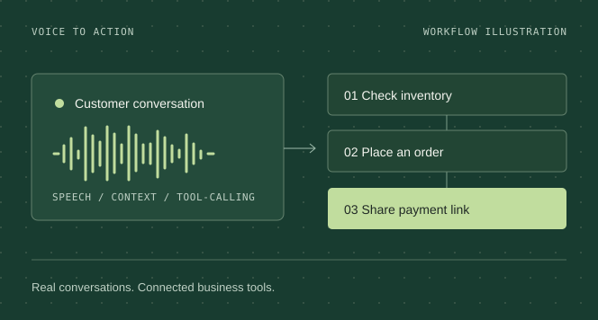
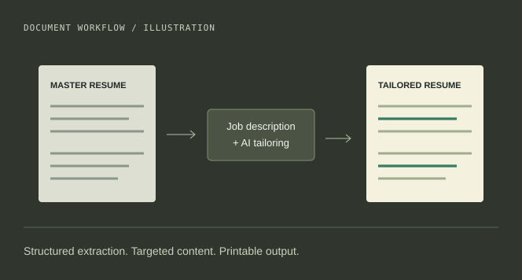

01 Real-time voice commerce
SareeBot AI
The conversation is only the beginning.
From a phone call to an order. Voice agents connected to inventory, WhatsApp, and payment workflows.
- Azure OpenAI
- FastAPI
- FreeSWITCH
System study / Voice

Baskar R / Salem, India
I build AI systems that retrieve, reason, and take action. From the first question to the next useful step.
Python / FastAPI / RAG / Voice AI
A conceptual stack: intelligence grounded in context, connected to tools that take action.
The practice
Conversational AI
Knowledge & retrieval
Agentic automation
01 / Selected work
Three ways to connect language models to real-world workflows.
01 Real-time voice commerce
The conversation is only the beginning.
From a phone call to an order. Voice agents connected to inventory, WhatsApp, and payment workflows.

02 Knowledge systems
Better context. A more useful answer.
Find the right context across channels. Dense search and BM25 come together through rank fusion, followed by reranking.

03 Document intelligence
A better fit. Still your experience.
A master resume, tailored to the opportunity. Document intelligence for a better fit, without inventing experience.

02 / Experience
Applied AI, shaped by client needs and hands-on engineering.
RAG assistants, agentic publishing, and AI products.
Built retrieval-backed teaching assistants and automated content workflows for clients, alongside my own voice and document AI platforms.
Multi-agent RAG, Text2SQL, and resume screening systems.
Developed LLM-powered tools using CrewAI, LangChain, Azure AI Services, and vector databases for structured and unstructured data.
03 / The engineer
I'm Baskar, based in Salem, India. My focus is applied AI, backend engineering, and the details that connect them.
My work is in building applications around language models: choosing the right context, connecting tools, and turning a prototype into usable software.
View my resumeB.Sc. Computer Science
Government Arts College (Autonomous), Salem
2023 – 2026
First Prize / Python Programming Competition
Muthayammal College of Arts and Science
04 / Start a conversation
Have an AI engineering role in mind?
Let's build something that works beyond the conversation.
Direct line
baskargceo@gmail.com